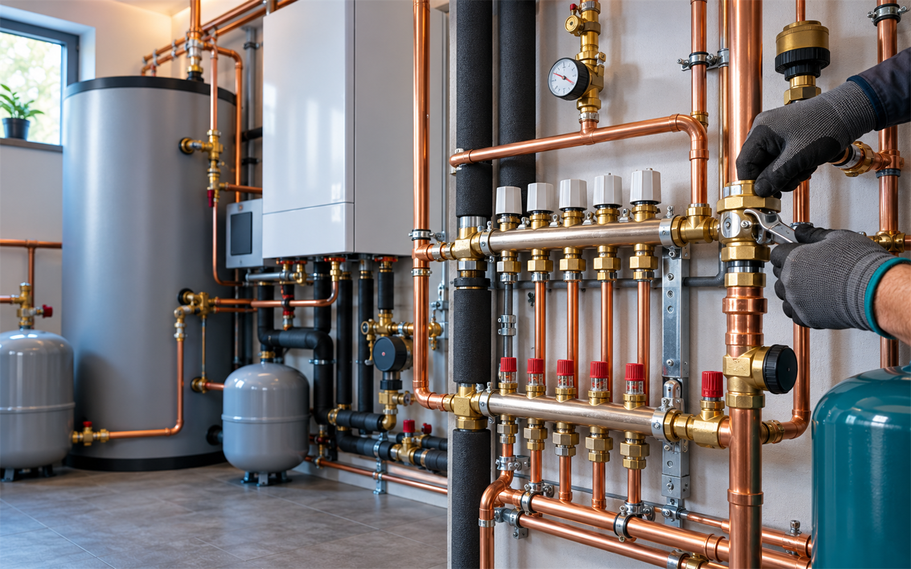

Voda a rozvody
Konkrétní rozsah a termín vždy domluvíme podle zadání.

Rozvody, topení, plyn, kamerové kontroly a havarijní servis v Teplicích.
Konkrétní rozsah a termín vždy domluvíme podle zadání.
Konkrétní rozsah a termín vždy domluvíme podle zadání.
Konkrétní rozsah a termín vždy domluvíme podle zadání.
Konkrétní rozsah a termín vždy domluvíme podle zadání.
Rozvody, topení, plyn, kamerové kontroly a havarijní servis v Teplicích. Nejdříve si upřesníme situaci, rozsah práce a vhodný termín. Díky tomu dostanete postup, který odpovídá vašemu konkrétnímu zadání.
Veřejná nabídka uvádí vodu, topení, plyn, kamerové kontroly a práce na potrubí.
Uvedené služby a kontakty vycházejí z veřejně dostupných firemních profilů. Fotografie je ilustrační oborový vizuál.
Zavolejte nebo napište. Podle typu práce a lokality se domluví další krok.
Stačí stručně popsat situaci, místo realizace a přibližný rozsah. Pokud máte fotografie, můžete je zmínit při prvním kontaktu.
Použijte telefon nebo e-mail uvedený níže. Přesný rozsah se potvrdí individuálně.
Kašparova 1847, 415 01 Teplice (katalog; Google obslužná oblast)
Teplice